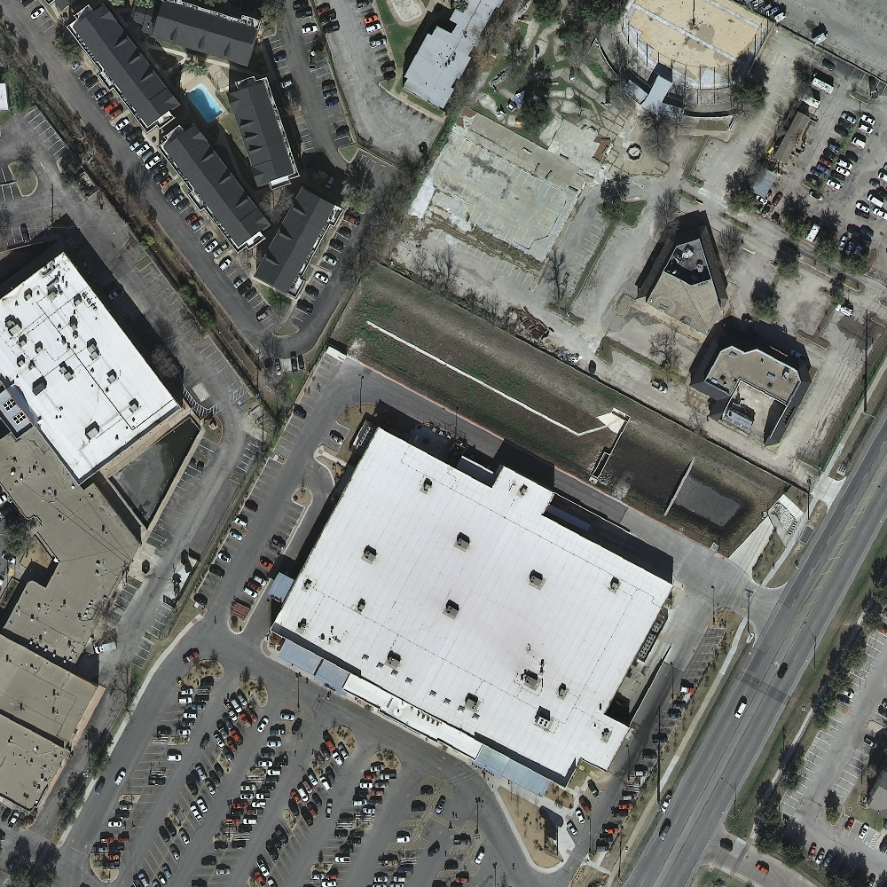

SkyEdge
选择巡检场景
离线可用
低空影像现场核查
选择本次任务类型，进入对应的影像导入、智能识别、人工标注与报告导出流程。
2
任务
34
建筑对象
6
已标注
建筑巡检任务
点击任务进入影像导入
识别结果
导入影像后点击识别建筑，系统会生成可交互的红色 mask。
0 个建筑
待识别
2
任务
1
已闭合范围
1
待上报
灾害巡检任务
点击任务进入范围校正灾害范围校正
导入现场航拍图后，沿灾害边界采集定位点并生成实测范围。
实地范围记录
导入照片后点击实地范围定位，系统会记录巡检人员 GPS 轨迹。
0 个点
未开始
建筑对象
B-001
来源
建筑识别自动圈定
状态
人工标注